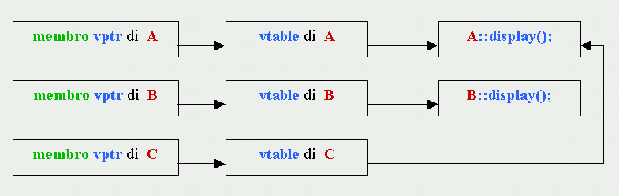
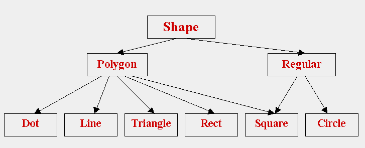
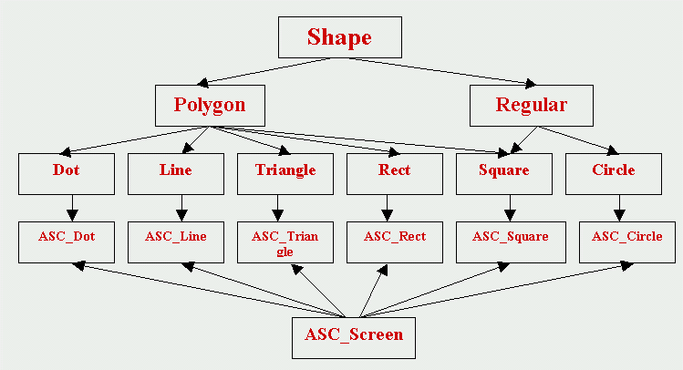

Polimorfismo
Late binding e polimorfismo
Abbiamo già sentito parlare di late binding trattando dei puntatori a funzione: l'aggancio fra il programma chiamante e la funzione chiamata é ritardato dal momento dalla compilazione a quello dell'esecuzione, perché solo in quella fase il C++ può conoscere la funzione selezionata, in base ai dati che condizionano il flusso del programma. La scelta, tuttavia, avviene all'interno di un insieme ben definito di funzioni, diverse l'una dall'altra non solo nel contenuto ma anche nel nome.
Conosciamo anche il significato di polimorfismo: funzioni-membro con lo stesso nome e gli stessi argomenti, ma appartenenti a oggetti di classi diverse. Nella terminologia del C++, polimorfismo significa: mandare agli oggetti lo stesso messaggio ed ottenere da essi comportamenti diversi, sul modello della vita reale, in cui termini simili determinano azioni diverse, in base al contesto in cui vengono utilizzati.
Tuttavia il polimorfismo che abbiamo esaminato finora é solo apparente: il puntatore "nascosto" this, introdotto dal compilatore, differenzia gli argomenti delle funzioni, e quindi non si tratta realmente di polimorfismo, ma soltanto di overload, cioè di un meccanismo che, come sappiamo, permette al C++ di riconoscere e selezionare la funzione già in fase di compilazione (early binding).
Il "vero" polimorfismo, nella pienezza del suo significato "filosofico", deve essere associato al late binding: la differenziazione di comportamento degli oggetti in risposta allo stesso messaggio non deve essere statica e predefinita, ma dinamica, cioè deve essere determinata dal contesto del programma in fase di esecuzione. Vedremo che ciò é realizzabile solo nell'ambito di una stessa famiglia di classi, e quindi il "vero" polimorfismo non può prescindere dall'eredità e si applica a funzioni-membro, con lo stesso nome e gli stessi argomenti, che appartengono sia alla classe base che alle sue derivate.
Ambiguità dei puntatori alla classe base
Prendiamo il caso di due classi, di nome A e B, dove A é la classe base e B una sua derivata. Consideriamo due istanze, a e b, rispettivamente di A e di B. Supponiamo inoltre che entrambe le classi contengano una funzione-membro, di nome display(), non ereditata da A a B, ma ridefinita in B (traducendo letteralmente il termine inglese "overridden", si suole dire, in questi casi, che la funzione display() di A é "scavalcata" nella classe B, ma è un termine "orrendo", che non useremo mai).
Sappiamo che, per la regola della dominanza, ogni volta il compilatore seleziona la funzione che appartiene alla stessa classe a cui appartiene l'oggetto (cioè la classe indicata nell'istruzione di definizione dell'oggetto), e quindi:
a.display() seleziona la funzione-membro di A b.display() seleziona la funzione-membro di B Supponiamo ora di definire un puntatore ptr alla classe A e di inizializzarlo con l'indirizzo dell'oggetto a:
A* ptr = &a;
anche in questo caso la funzione può essere selezionata senza ambiguità e quindi l'istruzione:
ptr->display()
accede alla funzione display() della classe A.Abbiamo visto, tuttavia, che a un puntatore definito per una classe base, possono essere assegnati indirizzi di oggetti di classi derivate, e quindi il seguente codice é valido:
if(.......) ptr = &a;
else ptr = &b;
in questo caso, dinanzi all'eventuale istruzione:
ptr->display()
come si regola il compilatore, visto che l'oggetto a cui punta ptr é determinato in fase di esecuzione? Di default, vale ancora la regola della dominanza e quindi, essendo ptr definito come puntatore alla classe A, viene selezionata la funzione display() della classe A, anche se in esecuzione l'oggetto puntato dovesse appartenere alla classe B.
Funzioni virtuali
Negli esempi esaminati finora, la funzione-membro display() é selezionata in fase di compilazione (early binding); ciò avviene anche nell'ultimo caso, sebbene l'oggetto associato alla funzione sia determinato solo in fase di esecuzione.
Se però, nella definizione della classe A, la funzione display() é dichiarata con lo specificatore "virtual", il C++ rinvia la scelta della funzione appropriata alla fase di esecuzione (late binding). In questo modo si realizza il polimorfismo: lo stesso messaggio (display), inviato a oggetti di classi diverse, induce a diversi comportamenti, in funzione dei dati del programma.
Un tipo dotato di funzioni virtuali è detto: tipo polimorfo. Per ottenere un comportamento polimorfo in C++, bisogna esclusivamente operare all'interno di una gerarchia di classi e alle seguenti condizioni:
la dichiarazione delle funzioni-membro della classe base (interessate al polimorfismo) deve essere specificata con la parola-chiave virtual; non è obbligatorio (ma neppure vietato) ripetere la stessa parola-chiave nelle dichiarazioni delle funzioni-membro delle classi derivate (di solito lo si fa per migliorare la leggibilità del programma);
una funzione dichiarata virtual deve essere sempre anche definita (senza virtual) nella classe base (al contrario delle normali funzioni che possono essere dichiarate senza essere definite, quando non si usano); invece, una classe derivata non ha l'obbligo di ridichiarare (e ridefinire) tutte le funzioni virtuali della classe base, ma solo quelle che le servono (quelle non ridefinite vengono ereditate);
gli oggetti devono essere manipolati soltanto attraverso puntatori (o riferimenti); quando invece si accede a un oggetto direttamente, il suo tipo è già noto al compilatore e quindi il polimorfismo in esecuzione non si attua.
Si può anche aggirare la virtualizzazione, qualificando il nome della funzione con il solito operatore di risoluzione della visibilità. Esempio:
ptr->A::display();
in questo caso esegue la funzione della classe base A, anche se questa è stata dichiarata virtual e ptr punta a un oggetto di B.
Tabelle delle funzioni virtuali
Riprendiamo l'esempio precedente, aggiungendo una nuova classe derivata da A, che chiamiamo C; questa classe non ridefinisce la funzione display() ma la eredita da A (come appare nella seguente tabella, dove il termine fra parentesi quadre è facoltativo):
class A { class B : public A { class C : public A { ........ public: ...... ......... public: ...... .............. virtual void display(); [virtual] void display(); }; }; }; Se ora assegniamo a ptr l'indirizzo di un oggetto che, in base al flusso dei dati in esecuzione, può essere indifferentemente di A, di B o di C, dinanzi a istruzioni del tipo:
ptr->display()
il C++ seleziona in esecuzione la funzione giusta, cioè quella di A se l'oggetto appartiene ad A o a C, quella di B se l'oggetto appartiene a B.Infatti il C++ prepara, in fase di compilazione, delle tabelle, dette "Tabelle virtuali" o vtables, una per la classe base e una per ciascuna classe derivata, in cui sistema gli indirizzi di tutte le funzioni dichiarate virtuali nella classe base; aggiunge inoltre un nuovo membro in ogni classe, detto vptr, che punta alla corrispondente vtable.
Il seguente diagramma chiarisce quanto detto, nel caso del nostro esempio:
 In questo modo, in fase di esecuzione il C++ può risalire, dall'indirizzo contenuto nel membro vptr dell'oggetto puntato da ptr (vptr è un dato-membro e quindi è realmente replicato in ogni oggetto), all'indirizzo della corretta funzione da selezionare.
Costruttori e distruttori virtuali
I distruttori possono essere virtualizzati, anzi, in certe condizioni è praticamente indispensabile che lo siano, se si vuole assicurare una corretta ripulitura della memoria. Infatti, proseguendo con il nostro esempio e supponendo stavolta che gli oggetti siano allocati nell'area heap, l'istruzione:
delete ptr;
assicura che sia invocato il distruttore dell'oggetto realmente puntato da ptr solo se il distruttore della classe base A è stato dichiarato virtual; altrimenti chiamerebbe comunque il distruttore di A, anche quando, in esecuzione, è stato assegnato a ptr l'indirizzo di un oggetto di una classe derivata.Viceversa i costruttori non possono essere virtualizzati, per il semplice motivo che, quando è invocato un costruttore, l'oggetto non esiste ancora e quindi non può neppure esistere un puntatore con il suo indirizzo. In altre parole, la nozione di "puntatore a costruttore" è una contraddizione in termini.
Tuttavia è possibile aggirare questo ostacolo virtualizzando, non il costruttore, ma un altro metodo della classe, definito in modo che crei un nuovo oggetto della stessa classe (si deve comunque partire da un oggetto già esistente) e si comporti quindi come un "costruttore polimorfo", in cui il tipo dell' oggetto costruito è determinato in fase di esecuzione.
Vediamo ora un'applicazione pratica di quanto detto. Riprendendo il nostro solito esempio, supponiamo che la classe base A sia provvista di un metodo pubblico così definito:
A* A::clone( ) { return new A(*this); }
come si può notare, la funzione-membro clone crea un nuovo oggetto nell'area heap, invocando il costruttore di copia di A (oppure quello di default se la classe ne è sprovvista) con argomento *this, e ne restituisce l'indirizzo. Ogni oggetto può pertanto generare una copia di se stesso chiamando la clone. Analogamente definiamo una funzione-membro clone della classe derivata B:
A* B::clone( ) { return new B(*this); }
Se ora virtualizziamo la funzione clone, inserendo nella definizione della classe base A la dichiarazione:
virtual A* clone();
troviamo in B la ridefinizione di una funzione virtuale, in quanto sono coincidenti il nome (clone), la lista degli argomenti (void) e il tipo del valore di ritorno (A*), e quindi possiamo ottenere da tale funzione un comportamento polimorfo. In particolare l'istruzione:A* pnew = ptr->clone();
crea un nuovo oggetto nell'area heap e inizializza pnew con l'indirizzo di tale oggetto; il tipo di questo nuovo oggetto è però deciso solo in fase di esecuzione (comportamento polimorfo della funzione clone) e coincide con il tipo puntato da ptr.
Scelta fra velocità e polimorfismo
Il processo early binding è più veloce del late binding, in quanto impegna il C++ solo in compilazione e non crea nuove tabelle o nuovi puntatori; per questo motivo la specifica virtual non è di default. Tuttavia è spesso utile rinunciare a un po' di velocità in cambio di altri vantaggi, come il polimorfismo, grazie al quale è il C++ e non il programmatore a doversi preoccupare di selezionare ogni volta il comportamento appropriato in risposta allo stesso messaggio.
Classi astratte
Nel capitolo "Tipi definiti dall'utente" abbiamo ammesso di utilizzare una nomenclatura "vecchia" identificando indiscriminatamente con il termine "tipo astratto" qualunque tipo non nativo del linguaggio. E' giunto il momento di precisare meglio cosa si intenda in C++ per "tipo astratto".
Una classe base, se definita con funzioni virtuali, "spiega" cosa sono in grado di fare gli oggetti delle sue classi derivate. Nel nostro esempio, la classe base A "spiega" che tutti gli oggetti del programma possono essere visualizzati, ognuno attraverso la propria funzione display(). In sostanza la classe base fornisce, oltre alle funzioni, anche uno "schema di comportamento" per le classi derivate.
Estremizzando questo concetto, si può creare una classe base con funzioni virtuali senza codice, dette funzioni virtuali pure. Non avendo codice, queste funzioni servono solo da "schema di comportamento" per le classi derivate e vanno dichiarate nel seguente modo:
virtual void display() = 0;
(nota: questo è l'unico caso in C++ di una dichiarazione con inizializzazione!) in questo esempio, si definisce che ogni classe derivata avrà una sua funzione di visualizzazione, chiamata sempre con lo stesso nome, e selezionata ogni volta correttamente grazie al polimorfismo.
Una classe base con almeno una funzione virtuale pura è detta classe base astratta, perché definisce la struttura di una gerarchia di classi, ma non può essere istanziata direttamente.
A differenza dalle normali funzioni virtuali, le funzioni virtuali pure devono essere ridefinite tutte nelle classi derivate (anche con "corpo nullo", quando non servono). Se una classe derivata non ridefinisce anche una sola funzione virtuale pura della classe base, rimane una classe astratta e non può ancora essere istanziata (a questo punto, una sua eventuale classe derivata, per diventare "concreta", è sufficiente che ridefinisca l'unica funzione virtuale pura rimasta).
Le classi astratte sono di importanza fondamentale nella programmazione in C++ ad alto livello, orientata a oggetti. Esse presentano agli utenti delle interfacce "pure", senza il vincolo degli aspetti implementativi, che sono invece forniti dalle loro classi derivate. Una gerarchia di classi, che deriva da una o più classi astratte, può essere costruita in modo "incrementale", nel senso di permettere il "raffinamento" di un progetto, aggiungendo via via nuove classi senza la necessità di modificare la parte preesistente. Gli utenti non sono coinvolti, se non vogliono, in questo processo di "raffinamento incrementale", in quanto vedono sempre la stessa interfaccia e utilizzano sempre le stesse funzioni (che, grazie al polimorfismo, saranno sempre selezionate sull'oggetto appropriato).
Un rudimentale sistema di figure geometriche
A puro titolo esemplificativo dei concetti finora esposti, si è tentato di progettare l'implementazione di un sistema (molto "rudimentale") di figure geometriche piane. Abbiamo scelto 6 figure, a ciascuna delle quali abbiamo fatto corrispondere una classe:
punto classe Dot linea classe Line triangolo classe Triangle rettangolo classe Rect quadrato classe Square cerchio classe Circle Tutte queste classi fanno parte di una gerarchia, al cui vertice si trova un'unica classe base astratta, di nome Shape, che contiene esclusivamente un distruttore virtuale (con "corpo nullo") e alcune funzioni virtuali pure. La classe Shape presenta, quindi, una pura interfaccia, non possedendo dati-membro nè funzioni-membro implementate, e non può essere istanziata (il compilatore darebbe errore).
Dalla classe Shape derivano due classi, anch'esse astratte, di nome Polygon e Regular (per la precisione, Polygon non è astratta, ma il suo costruttore è inserito nella sezione protetta e quindi non può essere istanziata dall'esterno; Regular, invece, è astratta, in quanto non ridefinisce tutte le funzioni virtuali pure di Shape).
Finalmente, le classi "concrete" derivano tutte da Polygon e Regular: Dot, Line, Triangle e Rect derivano da Polygon; Circle deriva da Regular; Square deriva da Polygon e Regular, per eredità multipla. Si configura così il seguente schema:
 A queste classi si aggiungono due strutture di appoggio: Point, che fornisce le coordinate dei punti sul piano, e Shape_Error, per la gestione delle eccezioni. Il tutto è racchiuso in un unico namespace, di nome mini_graphics, che contiene anche alcune costanti e alcune funzioni esterne alle classi, fra cui due operatori in overload per la lettura e scrittura di oggetti di Point. Il fatto che tutte le componenti del sistema appartengano a un namespace permette di evitare i potenziali conflitti di nomi, in verità molto comuni, come Line e Rect, con nomi uguali forniti da altre librerie ed eventualmente messi a disposizione da queste tramite using-directives. Volendo, l'utente provvederà ad inserire, negli ambiti locali del main e delle sue funzioni, le using-declarations necessarie; a questo proposito viene fornito un header-file contenente tutte le using-declarations dei nomi del namespace che possono essere visti dall'utente.
Il sistema è accessibile dall'esterno esclusivamente attraverso le funzioni virtuali pure di Shape, ridefinite nelle classi "concrete"; per cui, definito un puntatore a Shape, è possibile tramite questo sfruttare il polimorfismo e chiamare ogni volta la funzione-membro dell'oggetto "reale" selezionato in fase di esecuzione. Non tutte le funzioni, però, sono compatibili con tutti gli oggetti (per esempio una funzione che fornisce due punti può essere usata per definire una linea o un rettangolo, ma non per definire un triangolo); d'altra parte, in ogni classe "concreta", tutte le funzioni virtuali pure vanno ridefinite, e ciò ha costituito un problema, che poteva essere risolto in due modi:
in ogni classe, ridefinire con "corpo nullo" tutte le funzioni incompatibili (ma in questo modo l'utente non sarebbe stato informato del suo errore);
oppure ridefinire tali funzioni in modo da sollevare un'eccezione (ed è quello che è stato fatto): le funzioni di questo tipo sono state collocate nelle classi "intermedie" Polygon e Regular, e quindi non hanno avuto bisogno di essere ridefinite nelle classi "concrete" (dove sono ridefinite solo le funzioni "compatibili").
Le funzioni virtuali di Shape sono in tutto 11, divise in 4 gruppi e precisamente:
funzioni set (con 5 overloads) per impostare i parametri caratteristici di ogni figura (per esempio, le coordinate del bottom-left-corner e del top-right-corner di un rettangolo); all'inizo, i costruttori (di default) delle classi "concrete" generano figure precostituite;
4 funzioni get... per estrarre informazioni dalle figure (per esempio, le coordinate di un vertice di un poligono, oppure la lunghezza del diametro di un cerchio ecc...);
una funzione display per la visualizzazione (non grafica) dei parametri di una figura (per esempio le coordinate dei punti estremi di una linea o dei quattro vertici di un quadrato ecc...);
una funzione copy_from per copiare una figura da un'altra; se si tenta la copia fra due figure diverse è sollevata un'eccezione, salvo in questi casi:
- copia da quadrato a rettangolo (ammessa in quanto il quadrato è un caso particolare di rettangolo);
- copia da quadrato a cerchio (ricava il cerchio iscritto al quadrato);
- copia da cerchio a quadrato (ricava il quadrato circoscritto al cerchio)
In effetti, si tratta di un sistema assolutamente "minimale". Ma il nostro scopo non era quello di generare un prodotto finito, bensì di mostrare "come si pone il primo mattone di una casa". Infatti (e questa è la caratteristica principale della programmazione a oggetti che sfrutta il polimorfismo) il sistema si presta ad essere agevolmente incrementato in maniera modulare, in tre direzioni:
si possono aggiungere nuove figure (e cioè nuove classi) che ridefiniscono le stesse funzioni virtuali pure di Shape, e quindi si può ampliare la gerarchia senza modificare nulla dell'esistente;
si possono aggiungere nuove funzionalità (per esempio, trasformazioni di coordinate, traslazioni, rotazioni, variazioni della scala ecc...); in questo caso bisogna apportare qualche modifica al progetto, ma pur sempre in maniera "incrementale";
si possono creare infine altre gerarchie di classi, che eseguono operazioni "specializzate", come per esempio la visualizzazione grafica delle figure su un dato dispositivo (come vedremo nell'esercizio della prossima sezione); il fatto importante è che l'introduzione delle nuove gerarchie non comporta alcuna modifica della gerarchia Shape, ma si limita a creare degli "agganci" ad essa, preservando il requisito fondamentale di minimizzare le dipendenze fra i moduli, che è alla base di una corretta programmazione. Infatti, per come è stata progettata, la gerarchia Shape è "device-independent" è può essere visualizzata su qualunque dispositivo grafico.
Particolare cura è stata dedicata alla gestione delle eccezioni. Sono stati individuati quattro tipi di errori possibili:
errori di input nell'inserimento dei dati (per esempio, digitazione di caratteri diversi quando sono richieste cifre numeriche);
tentativi di generare figure geometriche "improprie" (per esempio un triangolo con i tre vertici allineati);
tentativi di eseguire funzioni incompatibili con la figura selezionata;
tentativi di eseguire copie fra figure diverse (salvo nei casi sopraelencati).
Osserviamo, per concludere, che l'introduzione di una classe derivata per eredità multipla (Square) ha generato qualche piccolo problema aggiuntivo e richiesto una particolare attenzione:
anzitutto, per evitare la replicazione della classe base, si è dovuto inserire virtual nelle specifiche di accesso a Shape di Polygon e Regular (e quindi Shape, oltre a essere astratta è anche virtuale .... più "irreale" di così....!);
in secondo luogo si sono dovute rifedinire in Square tutte le funzioni virtuali pure di Shape (comprese quelle "incompatibili"); altrimenti, il "doppio percorso" da Square a Shape avrebbe generato messaggi di errore per ambiguità (infatti, se una funzione non è ridefinita è ereditata: ma allora, in questo caso, sarebbe ereditata da Polygon o da Regular?).
Un rudimentale sistema di visualizzazione delle figure
Proseguendo nell'esempio precedente, costruiamo ora una nuova gerarchia di classi, con lo scopo di visualizzare su un dispositivo grafico le figure definite dalla gerarchia Shape. Non avendo niente di meglio a disposizione, abbiamo scelto una ("rudimentalissima") implementazione grafica costituita da caratteri ASCII, nella quale ogni punto del piano immagine è rappresentato da un carattere ("big pixel") e quindi "disegnare" un punto significa collocare nella posizione corrispondente un carattere adeguato (per esempio un asterisco). La bassissima risoluzione di un simile sistema "grafico" produrrà figure sicuramente distorte e poco definite, ma che quello che ci preme sottolineare non è l'efficacia del prodotto, bensì il metodo utilizzato per la sua implementazione. Il lettore potrà immaginarsi, al posto di questo sistema, una libreria grafica dotata delle più svariate funzionalità e atta a lavorare su dispositivi ad alta risoluzione; ma il "metodo" per implementare tale libreria, mettendola in relazione con le figure di Shape, sarebbe esattamente lo stesso.
La classe base della nostra nuova gerarchia si chiama ASC_Screen: è una classe astratta, in quanto possiede una funzione virtuale pura, di nome draw, così dichiarata:
virtual void draw() = 0;
Tuttavia, a differenza da Shape che presenta una pura interfaccia, ASC_Screen deve fornire gli strumenti per l'implementazione della grafica su un dispositivo "concreto" e quindi è stata dotata di tutte le proprietà e i metodi adeguati allo scopo. Poichè d'altra parte lo schermo è "unico" indipendentemente dal numero degli oggetti (cioè delle figure) presenti, tutti i dati-membro e le funzioni-membro di ASC_Screen (fuorchè draw) sono stati definiti static. Persino il costruttore e il distruttore (che ovviamente non possono essere definiti static) si comportano in realtà come metodi statici: il primo alloca la memoria "grafica" solo in occasione del primo oggetto creato, il secondo libera tale memoria solo quando tutti gli oggetti sono stati distrutti (per riconoscere tali condizioni è usato un membro statico "contatore" degli oggetti, incrementato dal costruttore e decrementato dal distruttore).Alcuni metodi di ASC_Screen sono accessibili dall'utente e quindi sono pubblici; altri sono protetti, in quanto accessibili solo dalle classi derivate, e altri sono privati, per solo uso interno. Tutti i dati-membro sono privati.
La classe ASC_Screen ha quindi una duplice funzione: quella di essere una base astratta per gli oggetti delle sue classi derivate, che ridefiniscono la funzione virtuale pura draw per eseguire i disegni; e quella di fornire, a livello della classe e non del singolo oggetto, tutte le funzionalità e i dati necessari per l'implementazione del sistema.
Ed è a questo punto che entra in gioco l'eredità multipla, la quale permette una soluzione semplice, pulita ed efficace al tempo stesso: ogni classe derivata da ASC_Screen, che rappresenta una figura da graficare, deriva anche dalla corrispondente classe di Shape: in questo modo, da una parte si ereditano le caratteristiche generali di una figura, che sono "device-independent", e dall'altra le funzionalità necessarie per il disegno della stessa figura su un particolare device.
Le classi derivate da ASC_Screen hanno gli stessi nomi delle corrispondenti di Shape, con il prefisso ASC_ (e quindi: ASC_Dot, ASC_Line, ecc...). Ogni classe possiede un unico membro, che ridefinisce la funzione virtuale pura draw. Non serve nient'altro, in quanto tutto il resto è ereditato dalle rispettive genitrici.
La situazione complessiva è adesso rappresentata dal seguente disegno (la gerarchia ASC_Screen è "a testa in giù", per ragioni di spazio):
 Nell'esercizio che segue viene visualizzato il disegno di una casa "in stile infantile", in cui ogni componente (pareti, tetto, porte, finestre ecc...) è costituito da una figura geometrica elementare. In tutto sono definiti 24 oggetti e due array di 24 puntatori, uno a Shape e l'altro a ASC_Screen. L'indirizzo di ogni oggetto è assegnato al corrispondente puntatore (in entrambi gli array), così che è possibile, per ogni figura, chiamare in modo polimorfo sia le funzioni di Shape che la draw di ASC_Screen. Quest'ultima non esegue materialmente la visualizzazione, ma si limita ad inserire degli asterischi (nelle posizioni che definiscono il contorno della figura) in una matrice bidimensionale di caratteri (allocata e inizializzata dal costruttore del primo oggetto); poichè ogni riga della matrice è terminata con un null, si vengono così a costituire tante stringhe quante sono le righe. Alla fine, per visualizzare il tutto, il programma può chiamare il metodo pubblico ASC_Screen::OnScreen(), il quale non fa altro che scrivere le stringhe sullo schermo, l'una sotto l'altra.
Il sistema è pure dotato ("sorprendentemente") di alcune funzionalità più "avanzate", quali il clipping (lo schermo funge da "finestra" che visualizza solo una parte dell'immagine, se questa ha un'estensione maggiore), il moving (possibilità di spostare il centro della "finestra" su un qualunque punto dell'immagine) e lo zoomming (possibilità di ingrandire o rimpicciolire l'immagine intorno al centro della "finestra"). Tutte queste operazioni vengono eseguite chiamando degli opportuni metodi pubblici di ASC_Screen.